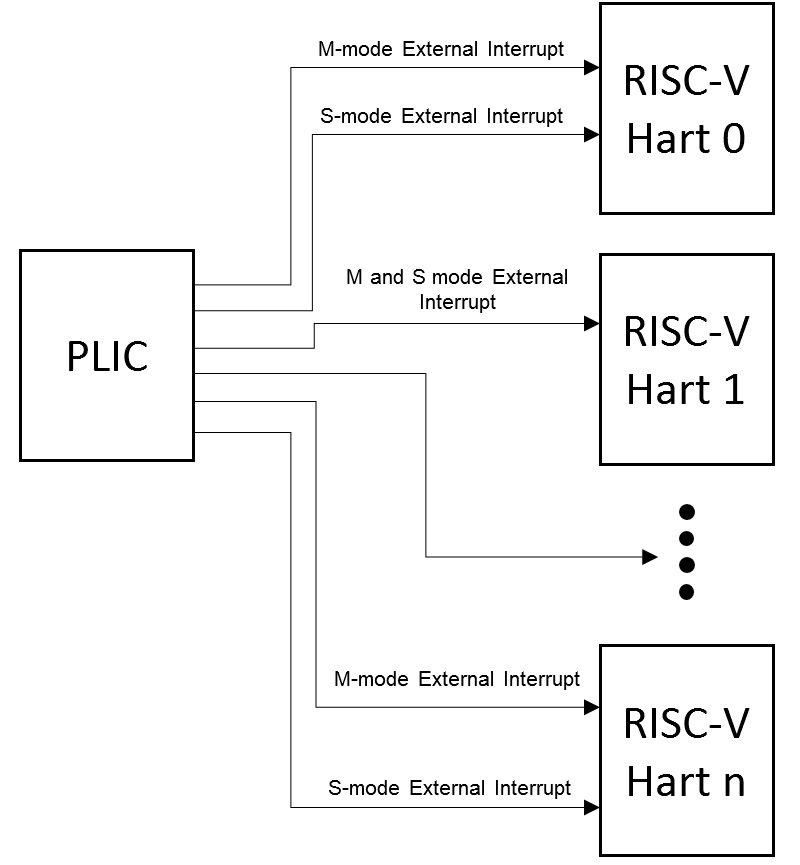
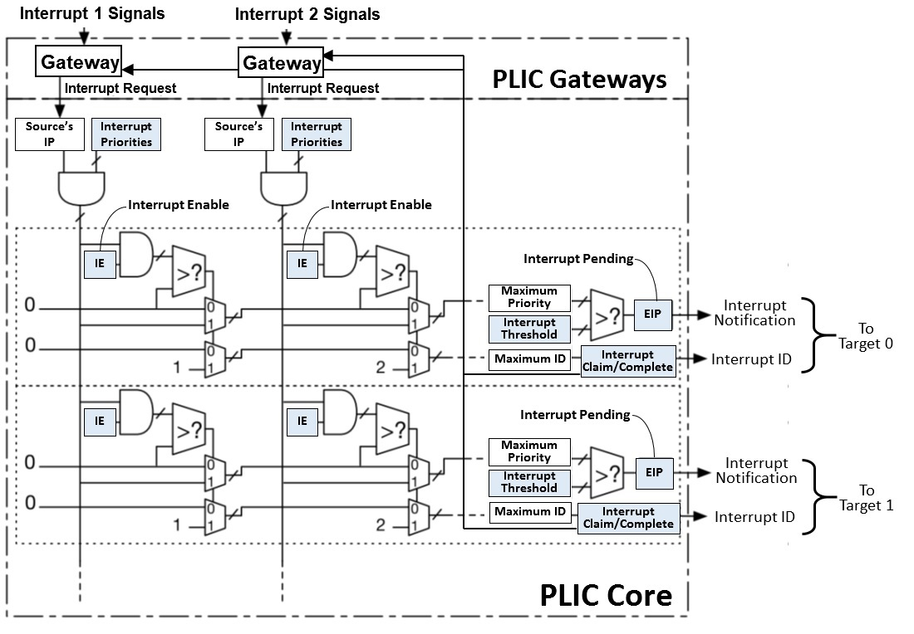

RISC-V Platform-Level Interrupt Controller Platform-Level Interrupt Controller Chapter 6. RISC-V Platform-Level Interrupt Controller RISC-V Platform-Level Interrupt Controller Specification Table of Contents 3.1. Change Log 3.1.1. version 1.0.0 3.1.2. version 1.0.0_rc6 3.1.3. version 1.0.0_rc5 3.1.4. version 1.0.0_rc4 3.1.5. version 1.0.0_rc3 3.1.6. version 1.0.0_rc2 3.1.7. version 1.0.0_rc1 4.1. Copyright and license information 2.1. Contributors 1. 3.1. Introduction 1.1. 6.1. Interrupt Targets and Hart Contexts 1.2. 6.2. Interrupt Gateways 1.3. 6.3. Interrupt Notifications 1.4. 6.4. Interrupt Identifiers (IDs) 1.5. 6.5. Interrupt Flow 2. 6.1. RISC-V PLIC Operation Parameters 3. 6.2. Memory Map 4. 6.3. Interrupt Priorities 5. 6.4. Interrupt Pending Bits 6. 6.5. Interrupt Enables 7. 6.6. Priority Thresholds 8. 6.7. Interrupt Claim Process 9. Interrupt Completion This document is in the Ratified state No changes are allowed. Any desired or needed changes can be the subject of a follow-on new extension. Ratified extensions are never revised 3.1. Change Log 3.1.1. version 1.0.0 2023-3-11 Ratified version 3.1.2. version 1.0.0_rc6 2023-1-5 Remove H/U mode from this spec. 3.1.3. version 1.0.0_rc5 2022-10-29 Clarify the "register width" when access to memory map register. Combine Register Width chapter and Memory Map chapter. 3.1.4. version 1.0.0_rc4 2022-8-27 Update specification to Frozen state. 3.1.5. version 1.0.0_rc3 2022-6-11 Revised Copyright and license information Added Andrew Waterman and Krste Asanovic as contributors who did the original design and wrote the spec. 3.1.6. version 1.0.0_rc2 2022-5-30 Revised the copyright statements to follow section 3.3 in Appendix A "INTELLECTUAL PROPERTY RIGHTS POLICY " of the RISC-V Regulations. Correct offsets of PLIC Interrupt Enable Bits memory map. 3.1.7. version 1.0.0_rc1 2022-4-16 The pre-public review version 4.1. Copyright and license information This RISC-V PLIC specification is © 2017-2023 RISC-V international This document is released under a Creative Commons Attribution 4.0 International License. creativecommons.org/licenses/by/4.0/. Please cite as: “RISC-V Platform-Level Interrupt Controller Specification", RISC-V International This document is a derivative of the "The RISC-V Instruction Set Manual, Volume II: Privileged Architecture, Document version 1.9.1" released under following license: © 2010–2017 Andrew Waterman, Yunsup Lee, Rimas Aviˇzienis, David Patterson, Krste Asanovi ́c. Creative Commons Attribution 4.0 International License. 2.1. Contributors The contributor to RISC-V PLIC specification in alphabetical order: Abner Chang <abner.chang@hpe.com> Andrew Waterman <andrew@sifive.com> Bin Meng <bmeng.cn@gmail.com> Drew Barbier <drew@sifive.com> Jeff Scheel <jeff@riscv.org> Jessica Clarke <jrtc27@jrtc27.com> Jinyan Xu <phantom@zju.edu.cn> Krste Asanovic <krste@sifive.com> Palmer Dabbelt <palmer@dabbelt.com> Robert Balas <balasr@iis.ee.ethz.ch> 1. 3.1. Introduction This specification delineates the operation parameters according the general PLIC architecture defined in the RISC-V platform-level interrupt controller (PLIC) specification (was removed from RISC-V Privileged Spec v1.11-draft) to work in the context of RISC-V systems. The PLIC multiplexes various device interrupts onto the external interrupt lines of Hart contexts, with hardware support for interrupt priorities. PLIC supports up-to 1023 interrupts (0 is reserved) and 15872 contexts, but the actual number of interrupts and context depends on the PLIC implementation. However, the implementation must adhere to the offset of each register within the PLIC operation parameters. The PLIC which claimed as PLIC-Compliant standard PLIC should follow the implementations mentioned in sections below. 1.1. 6.1. Interrupt Targets and Hart Contexts Interrupt targets are usually hart contexts, where a hart context is a given privilege mode on a given hart (though there are other possible interrupt targets, such as DMA engines). For example, in an 4-core system with 2-way SMT, you have 8 harts and probably at least two privilege modes per hart: machine mode and supervisor mode (Ref). Not all hart contexts need be interrupt targets, in particular, if a processor core does not support delegating external interrupts to lower-privilege modes, then the lower-privilege hart contexts will not be interrupt targets. Interrupt notifications generated by the PLIC appear in the meip/seip bits of the mip/sip registers for M/S modes respectively. Previous versions of this specification indicated that the PLIC supports U-mode interrupts. This text was removed because the privileged architecture does not define U-mode interrupts. If a future privileged architecture specifies U-mode interrupts, this PLIC specification can be straightforwardly extended to support them. The notification only appear in lower-privilege xip registers if external interrupts have been delegated to the lower-privilege modes. Each processor core must define a policy on how simultaneous active interrupts are taken by multiple hart contexts on the core. For the simple case of a single stack of hart contexts, one for each supported privileged mode, interrupts for higher-privilege contexts can preempt execution of interrupt handlers for lower-privilege contexts. A multithreaded processor core could run multiple independent interrupt handlers on different hart contexts at the same time. A processor core could also provide hart contexts that are only used for interrupt handling to reduce interrupt service latency, and these might preempt interrupt handlers for other harts on the same core. The PLIC treats each interrupt target independently and does not take into account any interrupt prioritization scheme used by a component that contains multiple interrupt targets. As a result, the PLIC provides no concept of interrupt preemption or nesting so this must be handled by the cores hosting multiple interrupt target contexts. RISC-V PLIC Interrupt Architecture Block Diagram  1.2. 6.2. Interrupt Gateways The interrupt gateways are responsible for converting global interrupt signals into a common interrupt request format, and for controlling the flow of interrupt requests to the PLIC core. At most one interrupt request per interrupt source can be pending in the PLIC core at any time, indicated by setting the source’s IP bit. The gateway only forwards a new interrupt request to the PLIC core after receiving notification that the interrupt handler servicing the previous interrupt request from the same source has completed. If the global interrupt source uses level-sensitive interrupts, the gateway will convert the first assertion of the interrupt level into an interrupt request, but thereafter the gateway will not forward an additional interrupt request until it receives an interrupt completion message. On receiving an interrupt completion message, if the interrupt is level-triggered and the interrupt is still asserted, a new interrupt request will be forwarded to the PLIC core. The gateway does not have the facility to retract an interrupt request once forwarded to the PLIC core. If a level-sensitive interrupt source deasserts the interrupt after the PLIC core accepts the request and before the interrupt is serviced, the interrupt request remains present in the IP bit of the PLIC core and will be serviced by a handler, which will then have to determine that the interrupt device no longer requires service. If the global interrupt source was edge-triggered, the gateway will convert the first matching signal edge into an interrupt request. Depending on the design of the device and the interrupt handler, in between sending an interrupt request and receiving notice of its handler’s completion, the gateway might either ignore additional matching edges or increment a counter of pending interrupts. In either case, the next interrupt request will not be forwarded to the PLIC core until the previous completion message has been received. If the gateway has a pending interrupt counter, the counter will be decremented when the interrupt request is accepted by the PLIC core. Unlike dedicated-wire interrupt signals, message-signalled interrupts (MSIs) are sent over the system interconnect via a message packet that describes which interrupt is being asserted. The message is decoded to select an interrupt gateway, and the relevant gateway then handles the MSI similar to an edge-triggered interrupt. 1.3. 6.3. Interrupt Notifications Each interrupt target has an external interrupt pending (EIP) bit in the PLIC core that indicates that the corresponding target has a pending interrupt waiting for service. The value in EIP can change as a result of changes to state in the PLIC core, brought on by interrupt sources, interrupt targets, or other agents manipulating register values in the PLIC. The value in EIP is communicated to the destination target as an interrupt notification. If the target is a RISC-V hart context, the interrupt notifications arrive on the meip/seip bits depending on the privilege level of the hart context. (In simple systems, the interrupt notifications will be simple wires connected to the processor implementing a hart. In more complex platforms, the notifications might be routed as messages across a system interconnect.) The PLIC hardware only supports multicasting of interrupts, such that all enabled targets will receive interrupt notifications for a given active interrupt. (Multicasting provides rapid response since the fastest responder claims the interrupt, but can be wasteful in high-interrupt-rate scenarios if multiple harts take a trap for an interrupt that only one can successfully claim. Software can modulate the PLIC IE bits as part of each interrupt handler to provide alternate policies, such as interrupt affinity or round-robin unicasting.) Depending on the platform architecture and the method used to transport interrupt notifications, these might take some time to be received at the targets. The PLIC is guaranteed to eventually deliver all state changes in EIP to all targets, provided there is no intervening activity in the PLIC core. (The value in an interrupt notification is only guaranteed to hold an EIP value that was valid at some point in the past. In particular, a second target can respond and claim an interrupt while a notification to the first target is still in flight, such that when the first target tries to claim the interrupt it finds it has no active interrupts in the PLIC core.) 1.4. 6.4. Interrupt Identifiers (IDs) Global interrupt sources are assigned small unsigned integer identifiers, beginning at the value 1. An interrupt ID of 0 is reserved to mean “no interrupt”. Interrupt identifiers are also used to break ties when two or more interrupt sources have the same assigned priority. Smaller values of interrupt ID take precedence over larger values of interrupt ID. 1.5. 6.5. Interrupt Flow Below figure shows the messages flowing between agents when handling interrupts via the PLIC. Global interrupts are sent from their source to an interrupt gateway that processes the interrupt signal from each source Interrupt gateway then sends a single interrupt request to the PLIC core, which latches these in the core interrupt pending bits (IP). The PLIC core forwards an interrupt notification to one or more targets if the targets have any pending interrupts enabled, and the priority of the pending interrupts exceeds a per-target threshold. When the target takes the external interrupt, it sends an interrupt claim request to retrieve the identifier of the highest priority global interrupt source pending for that target from the PLIC core. PLIC core then clears the corresponding interrupt source pending bit. After the target has serviced the interrupt, it sends the associated interrupt gateway an interrupt completion message The interrupt gateway can now forward another interrupt request for the same source to the PLIC. PLIC Interrupt Flow 2. 6.1. RISC-V PLIC Operation Parameters General PLIC operation parameter register blocks are defined in this spec, those are: Interrupt Priorities registers: The interrupt priority for each interrupt source. Interrupt Pending Bits registers: The interrupt pending status of each interrupt source. Interrupt Enables registers: The enablement of interrupt source of each context. Priority Thresholds registers: The interrupt priority threshold of each context. Interrupt Claim registers: The register to acquire interrupt source ID of each context. Interrupt Completion registers: The register to send interrupt completion message to the associated gateway. Below is the figure of PLIC Operation Parameter Block Diagram, PLIC Operation Parameter Block Diagram  3. 6.2. Memory Map The base address of PLIC Memory Map is platform implementation-specific. The memory-mapped registers specified in this chapter have a width of 32-bits. The bits are accessed atomically with LW and SW instructions. PLIC Memory Map base + 0x000000: Reserved (interrupt source 0 does not exist) base + 0x000004: Interrupt source 1 priority base + 0x000008: Interrupt source 2 priority ... base + 0x000FFC: Interrupt source 1023 priority base + 0x001000: Interrupt Pending bit 0-31 base + 0x00107C: Interrupt Pending bit 992-1023 ... base + 0x002000: Enable bits for sources 0-31 on context 0 base + 0x002004: Enable bits for sources 32-63 on context 0 ... base + 0x00207C: Enable bits for sources 992-1023 on context 0 base + 0x002080: Enable bits for sources 0-31 on context 1 base + 0x002084: Enable bits for sources 32-63 on context 1 ... base + 0x0020FC: Enable bits for sources 992-1023 on context 1 base + 0x002100: Enable bits for sources 0-31 on context 2 base + 0x002104: Enable bits for sources 32-63 on context 2 ... base + 0x00217C: Enable bits for sources 992-1023 on context 2 ... base + 0x1F1F80: Enable bits for sources 0-31 on context 15871 base + 0x1F1F84: Enable bits for sources 32-63 on context 15871 base + 0x1F1FFC: Enable bits for sources 992-1023 on context 15871 ... base + 0x1FFFFC: Reserved base + 0x200000: Priority threshold for context 0 base + 0x200004: Claim/complete for context 0 base + 0x200008: Reserved ... base + 0x200FFC: Reserved base + 0x201000: Priority threshold for context 1 base + 0x201004: Claim/complete for context 1 ... base + 0x3FFF000: Priority threshold for context 15871 base + 0x3FFF004: Claim/complete for context 15871 base + 0x3FFF008: Reserved ... base + 0x3FFFFFC: Reserved Sections below describe the control register blocks of PLIC operation parameters. 4. 6.3. Interrupt Priorities Interrupt priorities are small unsigned integers, with a platform-specific maximum number of supported levels. The priority value 0 is reserved to mean "never interrupt", and interrupt priority increases with increasing integer values. Each global interrupt source has an associated interrupt priority held in a memory-mapped register. Different interrupt sources need not support the same set of priority values. A valid implementation can hardwire all input priority levels. Interrupt source priority registers should be WARL fields to allow software to determine the number and position of read-write bits in each priority specification, if any. To simplify discovery of supported priority values, each priority register must support any combination of values in the bits that are variable within the register, i.e., if there are two variable bits in the register, all four combinations of values in those bits must operate as valid priority levels. If PLIC supports Interrupt Priorities, then each PLIC interrupt source can be assigned a priority by writing to its 32-bit memory-mapped priority register. A priority value of 0 is reserved to mean "never interrupt" and effectively disables the interrupt. Priority 1 is the lowest active priority while the maximum level of priority depends on PLIC implementation. Ties between global interrupts of the same priority are broken by the Interrupt ID; interrupts with the lowest ID have the highest effective priority. The base address of Interrupt Source Priority block within PLIC Memory Map region is fixed at 0x000000. PLIC Register Block Name Function Register Block Size in Byte Description Interrupt Source Priority Interrupt Source Priority #0 to #1023 1024 * 4 = 4096(0x1000) bytes This is a continuously memory block which contains PLIC Interrupt Source Priority. Total 1024 Interrupt Source Priority in this memory block. Interrupt Source Priority #0 is reserved which indicates it does not exist. PLIC Interrupt Source Priority Memory Map 0x000000: Reserved (interrupt source 0 does not exist) 0x000004: Interrupt source 1 priority 0x000008: Interrupt source 2 priority ... 0x000FFC: Interrupt source 1023 priority 5. 6.4. Interrupt Pending Bits The current status of the interrupt source pending bits in the PLIC core can be read from the pending array, organized as 32-bit register. The pending bit for interrupt ID N is stored in bit (N mod 32) of word (N/32). Bit 0 of word 0, which represents the non-existent interrupt source 0, is hardwired to zero. A pending bit in the PLIC core can be cleared by setting the associated enable bit then performing a claim. The base address of Interrupt Pending Bits block within PLIC Memory Map region is fixed at 0x001000. PLIC Register Block Name Function Register Block Size in Byte Description Interrupt Pending Bits Interrupt Pending Bit of Interrupt Source #0 to #N 1024 / 8 = 128(0x80) bytes This is a continuously memory block contains PLIC Interrupt Pending Bits. Each Interrupt Pending Bit occupies 1-bit from this register block. PLIC Interrupt Pending Bits Memory Map 0x001000: Interrupt Source #0 to #31 Pending Bits ... 0x00107C: Interrupt Source #992 to #1023 Pending Bits 6. 6.5. Interrupt Enables Each global interrupt can be enabled by setting the corresponding bit in the enables register. The enables registers are accessed as a contiguous array of 32-bit registers, packed the same way as the pending bits. Bit 0 of enable register 0 represents the non-existent interrupt ID 0 and is hardwired to 0. PLIC has 15872 Interrupt Enable blocks for the contexts. How PLIC organizes interrupts for the contexts (Hart and privilege mode) is out of RISC-V PLIC specification scope, however it must be spec-out in vendor’s PLIC specification. (A large number of potential IE bits might be hardwired to zero in cases where some interrupt sources can only be routed to a subset of targets. A larger number of bits might be wired to 1 for an embedded device with fixed interrupt routing. Interrupt priorities, thresholds, and hart-internal interrupt masking provide considerable flexibility in ignoring external interrupts even if a global interrupt source is always enabled.) The base address of Interrupt Enable Bits block within PLIC Memory Map region is fixed at 0x002000. PLIC Register Block Name Function Register Block Size in Byte Description Interrupt Enable Bits Interrupt Enable Bit of Interrupt Source #0 to #1023 for 15872 contexts (1024 / 8) * 15872 = 2031616(0x1f0000) bytes This is a continuously memory block contains PLIC Interrupt Enable Bits of 15872 contexts. Each Interrupt Enable Bit occupies 1-bit from this register block and total 15872 Interrupt Enable Bit blocks PLIC Interrupt Enable Bits Memory Map 0x002000: Interrupt Source #0 to #31 Enable Bits on context 0 ... 0x00207C: Interrupt Source #992 to #1023 Enable Bits on context 0 0x002080: Interrupt Source #0 to #31 Enable Bits on context 1 ... 0x0020FC: Interrupt Source #992 to #1023 Enable Bits on context 1 0x002100: Interrupt Source #0 to #31 Enable Bits on context 2 ... 0x00217C: Interrupt Source #992 to #1023 Enable Bits on context 2 0x002180: Interrupt Source #0 to #31 Enable Bits on context 3 ... 0x0021FC: Interrupt Source #992 to #1023 Enable Bits on context 3 ... ... ... 0x1F1F80: Interrupt Source #0 to #31 on context 15871 ... 0x1F1FFC: Interrupt Source #992 to #1023 on context 15871 7. 6.6. Priority Thresholds PLIC provides context based threshold register for the settings of a interrupt priority threshold of each context. The threshold register is a WARL field. The PLIC will mask all PLIC interrupts of a priority less than or equal to threshold. For example, a threshold value of zero permits all interrupts with non-zero priority. The base address of Priority Thresholds register block is located at 4K alignment starts from offset 0x200000. PLIC Register Block Name Function Register Block Size in Byte Description Priority Threshold Priority Threshold for 15872 contexts 4096 * 15872 = 65011712(0x3e00000) bytes This is the register of Priority Thresholds setting for each context PLIC Interrupt Priority Thresholds Memory Map 0x200000: Priority threshold for context 0 0x201000: Priority threshold for context 1 0x202000: Priority threshold for context 2 0x203000: Priority threshold for context 3 ... ... ... 0x3FFF000: Priority threshold for context 15871 8. 6.7. Interrupt Claim Process Sometime after a target receives an interrupt notification, it might decide to service the interrupt. The target sends an interrupt claim message to the PLIC core, which will usually be implemented as a non-idempotent memory-mapped I/O control register read. On receiving a claim message, the PLIC core will atomically determine the ID of the highest-priority pending interrupt for the target and then clear down the corresponding source’s IP bit. The PLIC core will then return the ID to the target. The PLIC core will return an ID of zero, if there were no pending interrupts for the target when the claim was serviced. After the highest-priority pending interrupt is claimed by a target and the corresponding IP bit is cleared, other lower-priority pending interrupts might then become visible to the target, and so the PLIC EIP bit might not be cleared after a claim. The interrupt handler can check the local meip/seip/ueip bits before exiting the handler, to allow more efficient service of other interrupts without first restoring the interrupted context and taking another interrupt trap. It is always legal for a hart to perform a claim even if the EIP is not set. In particular, a hart could set the threshold value to maximum to disable interrupt notifications and instead poll for active interrupts using periodic claim requests, though a simpler approach to implement polling would be to clear the external interrupt enable in the corresponding xie register for privilege mode x. The PLIC can perform an interrupt claim by reading the claim/complete register, which returns the ID of the highest priority pending interrupt or zero if there is no pending interrupt. A successful claim will also atomically clear the corresponding pending bit on the interrupt source. The PLIC can perform a claim at any time and the claim operation is not affected by the setting of the priority threshold register. The Interrupt Claim Process register is context based and is located at (4K alignment + 4) starts from offset 0x200000. PLIC Register Block Name Function Register Block Size in Byte Description Interrupt Claim Register Interrupt Claim Process for 15872 contexts 4096 * 15872 = 65011712(0x3e00000) bytes This is the register used to acquire interrupt ID for each context PLIC Interrupt Claim Process Memory Map 0x200004: Interrupt Claim Process for context 0 0x201004: Interrupt Claim Process for context 1 0x202004: Interrupt Claim Process for context 2 0x203004: Interrupt Claim Process for context 3 ... ... ... 0x3FFF004: Interrupt Claim Process for context 15871 9. Interrupt Completion The PLIC signals it has completed executing an interrupt handler by writing the interrupt ID it received from the claim to the claim/complete register. The PLIC does not check whether the completion ID is the same as the last claim ID for that target. If the completion ID does not match an interrupt source that is currently enabled for the target, the completion is silently ignored. After a handler has completed service of an interrupt, the associated gateway must be sent an interrupt completion message, usually as a write to a non-idempotent memory-mapped I/O control register. The gateway will only forward additional interrupts to the PLIC core after receiving the completion message. The Interrupt Completion registers are context based and located at the same address with Interrupt Claim Process register, which is at (4K alignment + 4) starts from offset 0x200000. PLIC Register Block Name Registers Register Block Size in Byte Description Interrupt Completion Register Interrupt Completion for 15872 contexts 4096 * 15872 = 65011712(0x3e00000) bytes This is register to write to complete Interrupt process PLIC Interrupt Completion Memory Map 0x200004: Interrupt Completion for context 0 0x201004: Interrupt Completion for context 1 0x202004: Interrupt Completion for context 2 0x203004: Interrupt Completion for context 3 ... ... ... 0x3FFF004: Interrupt Completion for context 15871 Chapter 5. Introduction